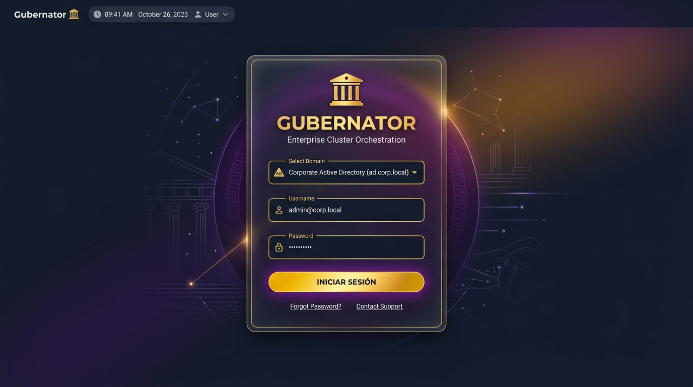
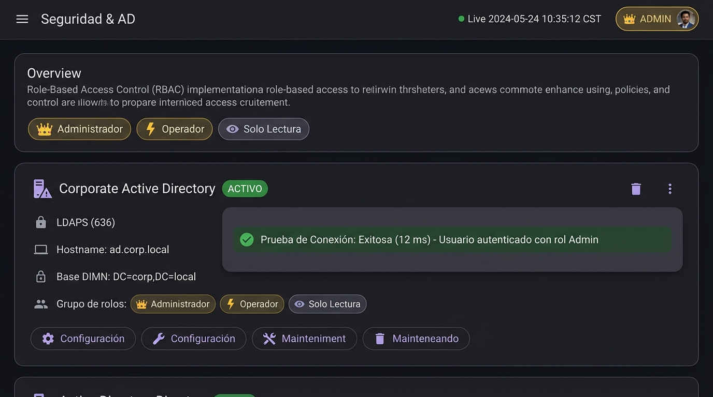

Web UI Dashboard
Gubernator includes a built-in Flutter Web Dashboard on port :4001 that provides full lifecycle management of your cluster without requiring the CLI.
The dashboard is built with Flutter Web and Material Design 3, offering a premium, responsive interface with dark/light theme support.
Enabling the Dashboard
The Web UI is disabled by default. Enable it by setting environment variables before starting the Manager:
GBNT_WEB=true \
GBNT_WEB_USER=admin \
GBNT_WEB_PASSWORD=yourpassword \
GBNT_API_TOKEN=yourtoken \
./gbnt serve
Or via Docker:
docker run -d \
-p 4000:4000 -p 4001:4001 -p 4002:4002 \
-v /var/run/docker.sock:/var/run/docker.sock \
-e GBNT_WEB=true \
-e GBNT_WEB_USER=admin \
-e GBNT_WEB_PASSWORD=admin \
-e GBNT_API_TOKEN=admin \
marioezquerro/gubernator:latest serve
Then open: http://localhost:4001
Technology Stack
The dashboard is built with:
| Technology | Purpose |
|---|---|
| Flutter 3.44+ | UI framework (compiled to web) |
| Material Design 3 | Design system with dark/light themes |
| Dart | Programming language |
| Go (Gin) | Backend API + embedded static serving |
The compiled Flutter web assets are embedded directly into the Go binary via go:embed, so the dashboard requires no external dependencies at runtime.
⚙️ Settings (Gear Icon)
Click the gear icon (⚙️) in the top-right corner of the app bar to access user settings. The settings dialog has three tabs:
Profile Tab
- Avatar — Display avatar with camera icon overlay (future: upload custom photo)
- Display Name — Editable text field for your display name
- Profile data is stored locally in the browser
Password Tab
- Change Password — Update your web dashboard password
- Requires current password verification
- New password confirmation field
- Updates
GBNT_WEB_PASSWORDfor the running process
Appearance Tab
- Theme Toggle — Switch between Light and Dark mode
- Visual theme selection cards with checkmark indicator
- Quick toggle switch for fast switching
- Theme preference applied immediately across the entire dashboard
Dashboard Sections
Stats Bar
Displays real-time cluster summary (auto-refreshes every 5 seconds):
| Counter | Icon | Description |
|---|---|---|
| Nodes | 🖥️ | Total registered cluster nodes |
| Stacks | 📚 | Total deployed stacks |
| Services | ⚙️ | Total services across all stacks |
| Tasks | 📋 | Total container instances |
| Running | ▶️ | Tasks currently in running state (green) |
Legions (Stacks) & Centurions (Nodes) Split Layout
By default, the upper dashboard area allocates 1/3 width to Legions (Stacks) and 2/3 width to Centurions (Nodes), offering optimal visibility for node clusters. A drag handle between the panels allows custom width adjustments.
Legions (Stacks)
Header includes the + Add Stack button for immediate Compose deployment.
Lists all deployed stacks with actions per row:
| Button | Icon | Action |
|---|---|---|
| Edit YAML | 📝 | Opens the compose editor dialog |
| Redeploy | 🚀 | Stops current containers and re-deploys immediately |
| Delete | 🗑️ | Stops containers and removes stack from DB |
Centurions (Nodes)
Lists all registered cluster nodes with their:
- ID (first 8 chars, monospace)
- IP address
- Role badge — manager (blue) or worker (cyan)
- Status badge — active (green), maintenance (amber/orange), pause (amber), drain (amber/red), down (red)
Node Context Menu Actions
Clicking the ⋮ (Node Actions) button on a node opens a context menu with streamlined, mutually exclusive actions:
- Pausar Nodo / Pause Node: Keeps existing containers running on the host, but stops scheduling any new tasks (pause status).
- Reanudar Nodo (Activar) / Resume Node: Displayed when a node is paused; restores its status to active to allow scheduling new tasks.
- Poner en Mantenimiento / Enter Maintenance: Evacuates/drains all running containers off the host and sets its status to maintenance.
- Sacar de Mantenimiento / Exit Maintenance: Displayed when a node is in maintenance or drain mode; restores status to active.
- Reiniciar Nodo / Reboot Node: Prompts confirmation to evacuate all containers, set status to maintenance, and trigger a host system reboot (sudo reboot).
- Forzar Salida / Force Leave: Drains user containers to active nodes, terminates system worker stacks (CORE-GBNT and [SRE] Monitor), and removes node & its system stacks from the cluster.
- Shell: Opens an embedded web shell to the host node.
- Edit Labels / Inspect / Promote / Demote: Modify node labels, view JSON inspect data, or switch node roles.
Cohorts & Tasks (Containers)
Features a checkbox selection column with header select-all support (persists across search criteria) and a Bulk Actions Toolbar: - Start: Batch-starts all checked containers. - Stop: Batch-stops all checked containers. - Restart: Batch-restarts all checked containers. - Remove: Batch-deletes all checked containers after confirmation.
Lists all container instances with:
| Column | Description |
|---|---|
| Checkbox | Row selection for batch operations |
| Task ID | First 8 chars of UUID |
| Service | Service name + Docker image |
| Container | Docker container name (gbnt-<uuid>) |
| Node | Node that is running this task |
| Status | running / pending / starting / dead |
| IP | Container's internal Docker network IP |
| Ports | Clickable chips for each port mapping (e.g. 8080:80). Clicking opens http://<nodeIP>:<hostPort> in a new browser tab. Supports multiple ports per container. |
| Stop | Executes docker stop + docker rm and removes from DB |
CoreDNS Management Suite (CoreDnsPage)
The dashboard features a full-featured 4-Tab CoreDNS Management Suite with real-time status telemetry and zero-downtime hot reloading:
- 5 KPI Summary Cards: Live Server Status, Cluster Base Domain (with interactive one-click edit dialog), Listener Port (
53 / 5354), Total DNS Records, and Active Upstream Forwarders. - Tab 1: Auto-Discovered DNS Records: Real-time host-qualified internal service discovery mapping container IPs to
<node>.<service>.<cluster_domain>(e.g.node-gbnt-worker1.caddy.acme.corp) and stack records<service>.<stack>.<cluster_domain>with copyablecurltesting chips. - Tab 2: Custom Static DNS Records: Create, edit, and delete custom static
A,AAAA,CNAME,TXT, andPTRrecords with instant synchronization into/etc/coredns/gubernator.hosts. - Tab 3: Interactive DNS Playground (
Dig / Nslookup): Execute live DNS queries directly from the browser against CoreDNS (127.0.0.1:5354) with latency benchmarking (ms) and raw answer inspection. - Tab 4: Upstream Forwarders & Corefile Editor: Quick-select upstream DNS providers (Cloudflare, Google, Quad9) or edit and save raw
Corefileconfigurations with automatic SIGHUP reloads.
Observability: Grafana Metrics, Network Monitor & Jaeger Traces
The dashboard integrates full SRE Observability via tabs and top app bar quick action buttons:
- Grafana Metrics Tab & Quick Link: Direct access to Grafana dashboards (/grafana/ or port :3000) for system and cluster metrics.
- Network Monitor Tab: A dedicated view showing unified network traffic (In/Out) across all hosts and pods in the cluster, leveraging node-exporter data.
- Jaeger Traces Tab & Quick Link: Embedded view to Jaeger UI (/jaeger/ or port :16686) for distributed trace visualization. Receives application traces over OTLP gRPC (:4317) and OTLP HTTP (:4318). Access is authenticated using your Gubernator credentials.
Compose Editor
Click Edit YAML on any stack to open the compose editor dialog:
┌──────────────────────────────────────────────────────────┐
│ 📝 Edit Compose: mystack [×] │
├──────────────────────────────────────────────────────────┤
│ services: │
│ web: │
│ image: nginx:alpine │
│ ports: │
│ - "8080:80" │
│ deploy: │
│ replicas: 2 │
│ │
├──────────────────────────────────────────────────────────┤
│ [Reset] [Save] [Save & Redeploy 🚀] │
└──────────────────────────────────────────────────────────┘
Editor Actions
| Button | What it does |
|---|---|
| Save | Saves the edited YAML to the database (no containers affected yet) |
| Save & Redeploy | Saves the YAML, stops existing containers, schedules new tasks |
| Reset | Reverts the editor to the last saved state |
| Click backdrop | Closes the modal without saving |
Stack Redeploy Flow
When you click Save & Redeploy (or the Redeploy button on the table):
1. Save new YAML to DB
2. Find all running Tasks for this Stack
3. docker stop <container_name> + docker rm -f <container_name>
4. Delete Task records from DB
5. Call POST /v1/stack/deploy with the updated compose
6. Scheduler assigns new Tasks to active nodes
7. Local Executor picks up pending Tasks and starts new containers
Caddy Ingress Visualization Suite
The dashboard includes a full-featured Caddy Ingress Visualization Suite inspired by caddy-ui featuring 7 sub-tabs:
- Dashboard — Live server status, TLS state, process info (version, uptime, memory, last reload timestamp).
- Route Manager — Reverse proxy routes matrix, live upstream health checks, uptime %, search/filter by domain.
- Caddyfile Editor — Syntax validation,
caddy fmtformatting, backup history, and 1-click rollback. - TLS Certificates — Full certificate lifecycle manager: X.509 deep inspection modal (Subject, Issuer, SANs, serial, SHA-256 fingerprint), 1-click forced renewal/rotation, individual domain
.crtdownload, custom cert & key upload modal, orphaned certificate cleanup, and Root CA Download (root.crt). - Access Logs — Streaming log tailing with keyword search and level filters (
ERROR,WARN,INFO). - Log Configuration — Toggle access logging per site block directly from the UI.
- Metrics — RPS gauge, average response latency, status code breakdown (
2xx,3xx,4xx,5xx), and p50/p95/p99 percentiles.
SLO & Error Budgets Suite
The dashboard includes a dedicated 5-tab SLO Management Suite inspired by Slok and Pyrra:
- Overview & Error Budgets — Live status cards, real-time text search, multi-field sorting (Lowest Budget, Highest Burn, Name), Cards vs Data Table view toggle, clickable label chips, and detail modals with RED metrics & historical trend charts.
- User Journeys — Composite journey topology, aggregated availability targets, average error budget, and bottleneck service identification.
- Deployment Correlation — Timeline graph cross-referencing stack updates and container restarts with service burn rate spikes.
- SLI Templates & PromQL Generator — Interactive catalog of built-in SLI query templates (
caddy-http,http-status,latency-p99,grpc). - Backtest & Validator — Form for pasting Compose YAML to run instant dry-run PromQL backtests against historical Prometheus metrics.
API Endpoints Used by the Dashboard
The Web UI communicates with the internal /api routes (on port 4001, protected by Basic Auth):
| Method | Endpoint | Description |
|---|---|---|
GET |
/api/auth/providers |
Lists available auth domains and directories |
POST |
/api/auth/login |
Authenticates against Local Admin or Active Directory |
GET |
/api/auth/me |
Retrieves active user identity and permissions |
POST |
/api/auth/logout |
Clears user session |
GET |
/api/auth/ldap |
Lists configured LDAP/AD servers (Admin only) |
POST |
/api/auth/ldap |
Saves/updates an LDAP/AD server (Admin only) |
DELETE |
/api/auth/ldap/:id |
Deletes an LDAP/AD directory connection |
POST |
/api/auth/ldap/test |
Live connection & user lookup diagnostic tool |
GET |
/api/state |
Returns all nodes, stacks, services, tasks, user |
GET |
/api/stack/:id/compose |
Fetches raw YAML for a stack |
PUT |
/api/stack/:id/compose |
Updates raw YAML in DB |
POST |
/api/stack/:id/redeploy |
Stop + redeploy a stack |
DELETE |
/api/stack/:id |
Stop containers + delete stack |
DELETE |
/api/task/:id |
Stop container + delete task record |
GET |
/api/settings |
Get user settings (display name, theme) |
PUT |
/api/settings |
Update user settings |
PUT |
/api/settings/password |
Change web dashboard password |
GET |
/api/logs/status |
Checks Loki aggregator readiness |
GET |
/api/logs/labels |
Returns available containers, nodes, and streams |
GET |
/api/logs/query |
Multi-dimensional LogQL cluster log search |
GET |
/api/logs/export |
Downloads filtered log stream attachment |
🛡️ Enterprise Login & Security Suite
1. Modern Login Screen
The dashboard features an enterprise SSO login interface supporting both Microsoft Active Directory and emergency Local Administrator access:

2. Active Directory & LDAP Management
Admins can manage identity providers directly from the Seguridad & AD screen, test connectivity in real-time, and inspect assigned RBAC roles:

Building the Flutter UI from Source
If you need to modify the dashboard:
# Install Flutter SDK
brew install --cask flutter
# Navigate to the web-ui directory
cd web-ui
# Install dependencies
flutter pub get
# Build for production
flutter build web --release --base-href "/"
# Copy build output to Go embed directory
rm -rf ../internal/web/flutter
cp -r build/web ../internal/web/flutter
# Rebuild Go binary
cd .. && go build ./cmd/gbnt